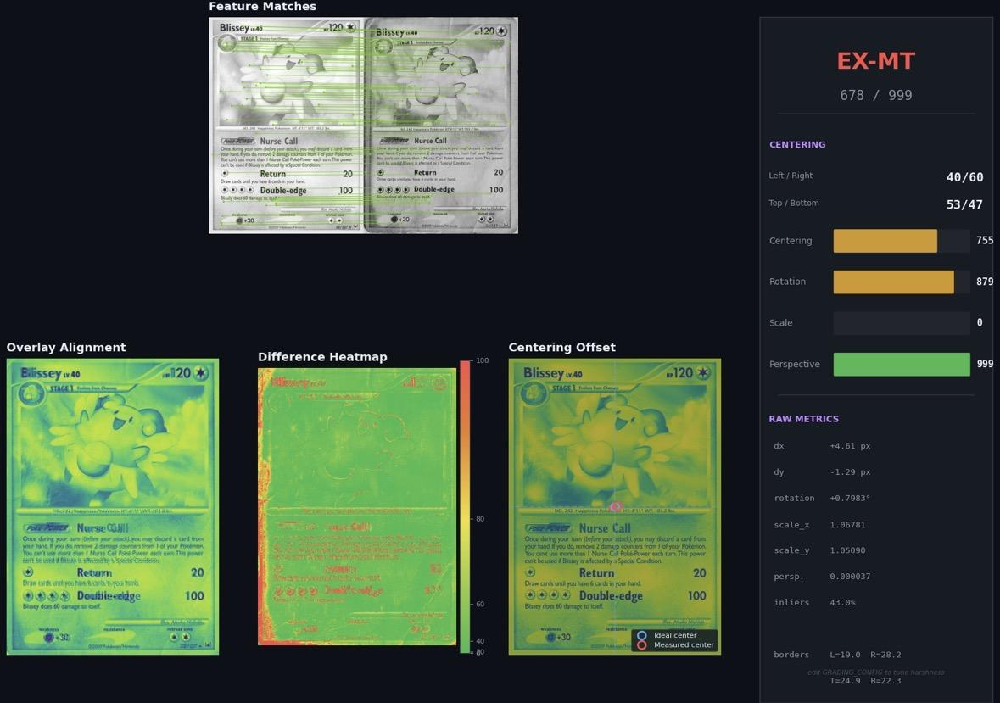

Applied ML & Embedded AI Engineer
Marion
Vanier.
25-year-old Applied ML & Embedded AI Engineer building AI systems for robotics, sensing, computer vision, and physical real-world deployments.

Featured Work
Projects recruiters can scan quickly.
Each project is framed around the problem, the approach, the result, and the tech that made it work.
Gallery
A closer look at the work.
About
I like building the bridge between model, hardware, and deployment.
My work sits in the practical part of AI: taking a messy physical-world problem, shaping the data, building the model, and getting the system into a form that can be tested by real users.
I have built prototypes across card identification and condition assessment, sparse tomography enhancement, high-voltage NDT control hardware, and indoor autonomous tracking.
Contact